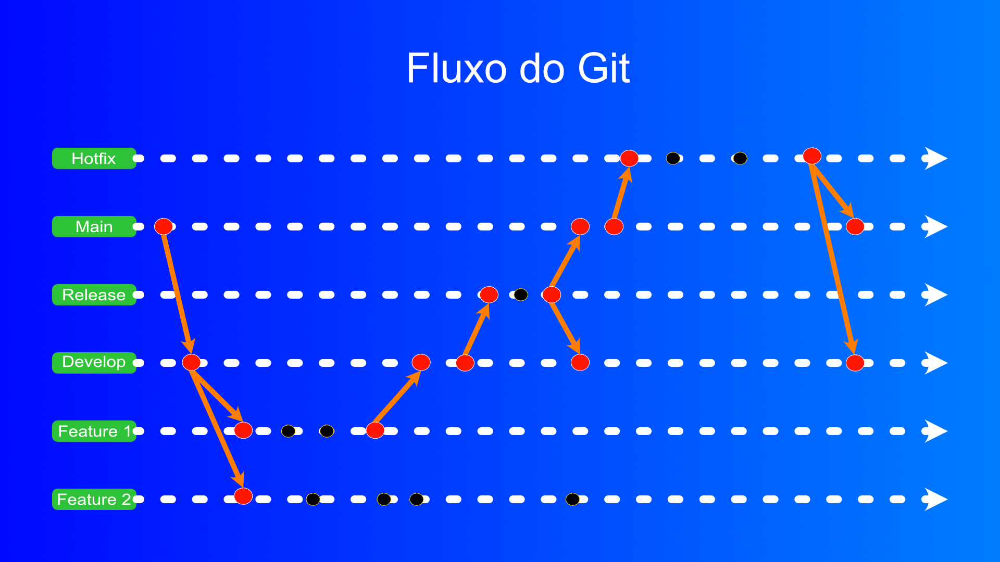

Bem-vindo ao Pure GitFlow!
Bem-vindo ao Pure GitFlow! Este projeto foi criado especificamente para desenvolvedores iniciantes que desejam entender, na prática, como funciona o fluxo de versionamento profissional de grandes empresas, sem depender de ferramentas automatizadas complexas.
Finalidade do projeto
A finalidade deste projeto é fornecer uma experiência guiada e didática sobre o ciclo de vida de um software. Ao utilizar este fluxo, você não está apenas "subindo código", mas aprendendo os caminhos básicos e essenciais que garantem a segurança e a organização de um projeto real.
Este repositório serve como um laboratório onde você aprenderá a:
Por que Git Puro?
Embora existam extensões que automatizam o Git Flow, aprender os comandos manuais é fundamental para:
🗺️ Fluxo GitFlow Completo

Imagem ilustrativa do fluxo1. BRANCHES PRINCIPAIS (main e Develop)
Main: Produção estável. Recebe
apenas merges vindos de release e
hotfix.
Develop: Branch de integração
contínua. Base para todas as features e próximo
release.
→ Na seção "Iniciando Repositório" contém os comandos para criação destas branches
2. BRANCHES DE CRIAÇÃO (features)
Novas funcionalidades nascem do
develop e são isoladas em branches
feature/nome.
Cada developer trabalha em sua feature sem afetar
outras. Após pronta, faz merge de volta ao
develop.
→ Vá para a seção "Features" para ver os
comandos
3. BRANCHES DE HOMOLOGAÇÃO (release)
Quando develop está pronto para produção, cria-se
uma branch release/vX.X.X.
Nesta fase: ajusta versão, documentação, e corrige
bugs menores. Depois faz merge em
main (com tag) e volta para
develop.
→ Vá para a seção "Releases" para ver os
comandos
4. BRANCHES DE CORREÇÃO (hotfix) - EMERGÊNCIA
Bug crítico em produção? Cria branch
hotfix/vX.X.X
direto do main.
Corrige o problema com urgência, faz merge em main
(com tag) E de volta em develop para sincronizar.
→ Vá para a seção "Hotfix" para ver os
comandos
✅ REGRA DE OURO
🚫 Nunca commite direto no main!
Main = Produção estável |
Develop = Próximo release
Sempre crie branches de suporte (feature, release,
hotfix) para organizar o workflow.
Instalar Git (Todos os Sistemas)
Acesse o site oficial do Git e clique no botão da sua plataforma (Windows/Mac/Linux).
🇧🇷 Não sabe inglês?
Clique com botão direito na página → "Traduzir
para Português"
ou use o Google Tradutor no navegador.
O site oficial tem instaladores prontos com todos os passos visuais. É mais fácil que receita de bolo!
Teste a Instalação e passos iniciais
# verifica a versão do git, se aparecer a versão tudo está correto
git --version
# configure seu nome e email (substitua pelos seus dados)
git config --global user.name "Seu Nome"
git config --global user.email "seu@email.com"
📁 Repositório NOVO
git init
git branch -M main
Cria pasta vazia com branch "main"
🔄 Repositório EXISTENTE
Já tem projeto com master? Converte para GitFlow:
git branch -M main
git checkout -b develop
✅ Estrutura Final
git branch -a
Deve mostrar: main, develop ✓
🛡️ O que é .gitignore?
Arquivo que fala pro Git "ignora esses arquivos". Eles NÃO vão pro repositório. Esse processo tem que ser feito antes de commitar o código, caso você comite, terá que reverter para conseguir remover.
Exemplos essenciais:
node_modules/
dist/
build/
*.log
.env
*.pyc
Criar .gitignore
touch .gitignore
echo "node_modules/" >> .gitignore
git add .gitignore
💾 Commit Básico - Salvando seu Trabalho
Um commit é um "snapshot" do seu código em um momento específico. É como salvar seu jogo com um ponto de restauração!
🎯 Finalidade do Commit
Registrar mudanças: Cada commit
documenta uma mudança específica no código.
Histórico rastreável: Você consegue
ver quem mudou o quê e quando.
Voltar no tempo: Se algo der
errado, você pode reverter para um commit
anterior.
Colaboração: Múltiplos
desenvolvedores podem trabalhar e sincronizar
mudanças.
Mensagens claras: Cada commit tem
uma mensagem explicando o que foi feito.
📝 Padrão de Mensagem de Commit
Use este padrão (Conventional Commits) para manter histórico limpo:
feat: adiciona nova funcionalidade fix: corrige um bug docs: atualiza documentação style: mudanças de formatação (espaços, etc) refactor: refatora código sem mudar comportamento test: adiciona/atualiza testes chore: atualiza dependências ou versão
Exemplo real: "feat: implementa autenticação JWT" ✓
1️⃣ Passo 1: Ver o que mudou
# Ver status dos arquivos (qual vai ser commitado) git status # Ver exatamente o que mudou em cada arquivo git diff
2️⃣ Passo 2: Adicionar arquivos (staging)
# Adicionar um arquivo específico git add nome-do-arquivo.js # Adicionar todos os arquivos modificados git add . # Adicionar de forma interativa (escolher quais linhas) git add -p
3️⃣ Passo 3: Criar o commit
# Commit com mensagem curta git commit -m "feat: adiciona validação de email" # Commit com mensagem detalhada (abre editor) git commit # Commit alterando a mensagem de um commit anterior (último) git commit --amend -m "nova mensagem"
📊 Visualizar histórico de commits
# Ver log simples git log --oneline # Ver log com gráfico das branches git log --oneline --graph --all # Ver commits de um autor específico git log --author="Paulo"
✅ Boas Práticas
- 💡 Commits pequenos e focados: Um commit = uma mudança bem definida
- 💡 Mensagens descritivas: "fix: corrige bug de login" é melhor que "arruma código"
- 💡 Commit frequentemente: Vários commits pequenos > um commit gigante
- 💡 Sempre faça git status antes: Não commita arquivos desnecessários
- 💡 Sincronize regularmente: git push após cada commit ou final do dia
- ❌ Nunca commita em main diretamente: Sempre use branches de suporte
🟢 Features - Desenvolvendo Funcionalidades
Uma feature é uma nova funcionalidade do seu projeto. Ela nasce do develop, é desenvolvida isoladamente, e volta para develop quando pronta.
💡 O que é uma Feature?
Isolamento: Cada feature fica em sua própria branch, sem afetar develop.
Desenvolvimento independente: Múltiplos developers podem trabalhar em features diferentes simultaneamente.
Facilita revisão: Quando pronta, a feature é revisada antes de fazer merge.
Fácil de reverter: Se algo der errado, a feature inteira pode ser descartada sem afetar main ou develop.
Padrão de nomenclatura: Use feature/nome-descritivo
📋 Exemplos de Nomes de Features
feature/login ✓ Simples e claro feature/autenticacao-jwt ✓ Descritivo feature/user-profile ✓ Em inglês (padrão) feature/add-email-validation ✓ Ação + contexto feature/bugfix ❌ Vago feature/atualizações ❌ Muito genérico feature/novo ❌ Não descreve nada
1️⃣ Passo 1: Criar a Feature
Primeiro, sempre puxe as atualizações do develop e depois crie sua feature:
# Ir para develop git checkout develop # Puxar as atualizações mais recentes git pull origin develop # Criar uma nova branch feature git checkout -b feature/seu-nome # Exemplo real: git checkout -b feature/login
Dica: Quando você executa git checkout -b, o Git cria a branch baseada no commit atual (develop).
2️⃣ Passo 2: Desenvolver a Feature
Agora você trabalha normalmente: edita arquivos, testa, commita:
# Fazer mudanças nos arquivos... # (você edita o código normalmente) # Ver o status git status # Adicionar as mudanças git add . # Commitar com mensagem descritiva git commit -m "feat: adiciona tela de login" # Fazer mais mudanças... git add . git commit -m "feat: implementa validação de email" git add . git commit -m "feat: cria função de autenticação JWT"
Dica: Múltiplos commits pequenos e focados são melhor que um commit gigante!
3️⃣ Passo 3: Publicar a Feature no Repositório Remoto
Depois de alguns commits, publique sua feature para o repositório remoto:
# Enviar a feature para o repositório remoto git push origin feature/login # Se for a primeira vez, Git pedirá para rastrear a branch remota # Você pode usar também: git push -u origin feature/login # (-u = --set-upstream, configura para rastrear automaticamente)
Por que fazer push? Para backup, colaboração com o time, e evitar perder código.
4️⃣ Passo 4: Sincronizar com Develop (Opcional)
Se outras features foram mergeadas no develop enquanto você trabalhava, sincronize:
# Trazer as atualizações do develop git fetch origin git pull origin develop # Se houver conflitos, resolva-os e depois: git add . git commit -m "chore: sincroniza com develop" git push origin feature/login
5️⃣ Passo 5: Finalizar a Feature
Quando a feature está pronta, faça merge de volta ao develop:
# Voltar para develop git checkout develop # Puxar as atualizações git pull origin develop # Fazer merge da feature git merge --no-ff feature/login # O --no-ff cria um commit de merge (recomendado no GitFlow) # Isso mantém o histórico limpo e rastreável # Publicar a merge git push origin develop
O que é --no-ff? Cria um commit de merge mesmo que o merge seja "fast-forward". Assim seu histórico fica organizado.
6️⃣ Passo 6: Deletar a Feature (Limpeza)
Após o merge, você pode deletar a branch da feature:
# Deletar localmente git branch -d feature/login # Deletar no repositório remoto git push origin --delete feature/login # Ver branches restantes git branch -a
Quando deletar? Após fazer merge com sucesso. Isso mantém o repositório limpo.
✅ Ciclo Completo de uma Feature
1. git checkout develop && git pull origin develop 2. git checkout -b feature/nome 3. (Desenvolver, commitar, testar) 4. git push origin feature/nome 5. (Revisar, ajustar se necessário) 6. git checkout develop && git pull origin develop 7. git merge --no-ff feature/nome 8. git push origin develop 9. git branch -d feature/nome 10. git push origin --delete feature/nome
⚠️ Armadilhas Comuns
-
❌ Esqueceu de fazer git pull antes de criar a feature
→ Pode levar a conflitos desnecessários -
❌ Trabalhou direto no develop em vez de criar uma feature
→ Viola o GitFlow! Sempre use features -
❌ Fez merge sem sincronizar com develop
→ Pode ter conflitos. Sempre faça pull antes de merge -
❌ Deletou a feature sem fazer merge
→ Seu trabalho pode ser perdido
🟠 Releases - Preparando para Produção
Uma release é o momento em que seu código do develop está pronto para ir para produção. Nessa fase você ajusta versões, testa, corrige bugs menores e prepara o deploy.
O que é uma Release?
Fase de Homologação: O código de develop é isolado em uma branch release para testes finais.
Ajustes Finais: Corrigir bugs menores, atualizar versões e documentação sem adicionar novas features.
Controle de Qualidade: Tudo é testado rigorosamente antes de chegar à produção.
Sincronização: Após pronto, merge em main (com tag) e volta para develop para sincronizar.
Padrão de nomenclatura: Use release/vX.X.X (semântico)
🎯 Quando Criar uma Release?
Develop está estável: Todas as features planejadas estão prontas e testadas.
Funcionalidades testadas: O código passou por testes de integração e funciona corretamente.
Sem novas features planejadas: Nenhuma outra feature deve entrar até o próximo release.
Tempo definido: Releases costumam seguir um calendário (semanal, bi-semanal, mensal).
Acordo do time: O product owner e o tech lead concordam que é hora de lançar.
1️⃣ Passo 1: Preparar para Release
Antes de criar a branch release, certifique-se que develop está pronto:
# Ir para develop git checkout develop # Puxar as atualizações mais recentes git pull origin develop # Verificar que não há mudanças não commitadas git status # Revisar o histórico de commits (features que vão para release) git log --oneline -10
Dica: Converse com o time! Certifique-se que ninguém está no meio de uma feature crítica.
2️⃣ Passo 2: Criar a Release Branch
Crie a branch release baseada no develop:
# Criar a release branch git checkout -b release/v1.0.0 # Exemplos reais: git checkout -b release/v2.1.0 git checkout -b release/v1.5.3 # Verificar que está na branch correta git branch
Importante: A release é criada do develop neste momento. Nenhuma nova feature entra em develop até o merge dessa release!
3️⃣ Passo 3: Ajustes Finais na Release
Nesta fase, você faz ajustes menores, sem adicionar novas funcionalidades:
# Atualizar arquivo de versão (package.json, version.txt, etc) # Exemplo em package.json: # "version": "1.0.0" # Atualizar CHANGELOG.md com as mudanças # Adicionar notas de release # Commitar as mudanças git add . git commit -m "chore: atualiza versão para v1.0.0 e CHANGELOG" # Corrigir bugs MENORES encontrados em testes git add . git commit -m "fix: corrige bug de validação encontrado em testes" # Ver todos os commits da release git log develop..HEAD --oneline
⚠️ IMPORTANTE: NÃO adicione features! Apenas: versão, documentação e correções de bugs descobertos em testes.
4️⃣ Passo 4: Testes Finais
Antes de fazer merge, teste tudo bem:
# Executar suite de testes # Se houver erros, corrija na release branch git add . git commit -m "fix: corrige erro encontrado em teste final" # Se tudo passou, você está pronto para fazer merge!
Dica: Este é o último momento para encontrar e corrigir problemas antes da produção.
5️⃣ Passo 5: Merge da Release em Main
Agora leve a release para produção (main):
# Ir para main git checkout main # Puxar atualizações (caso alguém tenha feito push) git pull origin main # Fazer merge da release git merge --no-ff release/v1.0.0 -m "Merge release v1.0.0 para produção" # Criar a tag na versão de produção git tag -a v1.0.0 -m "Release v1.0.0 - Versão estável em produção" # Publicar main e a tag git push origin main git push origin v1.0.0
--no-ff mantém o histórico limpo mostrando explicitamente quando uma release foi feita.
6️⃣ Passo 6: Sincronizar com Develop
Leve as mudanças da release de volta para develop:
# Ir para develop git checkout develop # Puxar atualizações git pull origin develop # Fazer merge da release git merge --no-ff release/v1.0.0 -m "Merge release v1.0.0 de volta para develop" # Publicar git push origin develop
Por que fazer merge de volta? Para sincronizar qualquer correção feita na release (versão, bugfixes) com develop.
7️⃣ Passo 7: Deletar a Release (Limpeza)
A release branch pode ser deletada após merge:
# Deletar localmente git branch -d release/v1.0.0 # Deletar no repositório remoto git push origin --delete release/v1.0.0 # Ver branches restantes git branch -a # Pronto! A release foi concluída!
Quando deletar? Após garantir que os merges em main e develop foram bem-sucedidos.
✅ Ciclo Completo de uma Release
1. git checkout develop && git pull origin develop 2. git checkout -b release/v1.0.0 3. (Ajustar versão, CHANGELOG, corrigir bugs menores) 4. git add . && git commit -m "chore: v1.0.0 release prep" 5. (Testar! npm test, npm run build, etc) 6. git checkout main && git pull origin main 7. git merge --no-ff release/v1.0.0 8. git tag -a v1.0.0 -m "Release v1.0.0" 9. git push origin main && git push origin v1.0.0 10. git checkout develop && git pull origin develop 11. git merge --no-ff release/v1.0.0 12. git push origin develop 13. git branch -d release/v1.0.0 && git push origin --delete release/v1.0.0 14. Deploy para produção (npm run deploy ou CI/CD)
💡 Boas Práticas
- ✅ Sempre use versionamento semântico: v1.0.0, v2.1.3, etc
- ✅ Mantenha um CHANGELOG: Documente o que mudou em cada versão
- ✅ Testar bem: A release branch é seu último checkpoint antes de produção
- ✅ Sincronizar com develop: Nunca esqueça de fazer merge de volta
- ✅ Criar tags: Toda release precisa de uma tag correspondente
- ✅ Comunicar o time: Avise quando uma release é criada e quando é lançada
- ✅ Deploy automático: Configure CI/CD para fazer deploy quando a tag é criada
⚠️ Armadilhas Comuns
-
❌ Adicionar features na release branch
→ Release é só para ajustes! Features vão em develop -
❌ Esquecer de sincronizar com develop
→ Bugfixes e versão ficarão fora de develop -
❌ Não testar antes do merge em main
→ Bugs irão para produção! Sempre teste! -
❌ Não criar a tag
→ Impossível rastrear qual código está em produção -
❌ Fazer merge em develop ANTES de main
→ Sempre: main primeiro, depois develop! -
❌ Continuar commitando em develop durante a release
→ Isso causará conflitos. Comunique ao time!
📝 Exemplo Real de Release
Seu app está pronto! v1.2.0 com 5 features novas:
# Preparação $ git checkout develop && git pull origin develop $ git checkout -b release/v1.2.0 # Ajustes $ vim package.json # 1.1.0 → 1.2.0 $ vim CHANGELOG.md # Adiciona notas da v1.2.0 $ git add . && git commit -m "chore: v1.2.0 release prep" # Realize testes automatizados e manuais # Tudo passou! ✅ # Main $ git checkout main && git pull origin main $ git merge --no-ff release/v1.2.0 $ git tag -a v1.2.0 -m "Release v1.2.0" $ git push origin main && git push origin v1.2.0 # Sincronizar develop $ git checkout develop && git pull origin develop $ git merge --no-ff release/v1.2.0 $ git push origin develop # Limpeza $ git branch -d release/v1.2.0 $ git push origin --delete release/v1.2.0 # Faça o Deploy # Sucesso! 🚀 v1.2.0 em produção!
🔴 Hotfix - Correção Crítica em Produção
Hotfix é uma correção urgente aplicada diretamente a main quando algo crítico quebra em produção. Deve ser rápida, segura e bem documentada.
Quando criar um Hotfix?
Bug crítico em produção: erro que impacta usuários, segurança ou dados.
Disponibilidade: Problema que impede o uso do serviço.
1️⃣ Passo 1: Criar branch de Hotfix
Crie a branch com base no main:
# Ir para main git checkout main # Puxar a versão atual da produção git pull origin main # Criar a branch hotfix git checkout -b hotfix/v1.0.1 # (Opcional) rodar testes rápidos/localmente antes de editar
2️⃣ Passo 2: Corrigir e testar
Faça a correção mínima necessária, rode testes e mantenha commits pequenos:
# Fazer a correção # Editar arquivos, testar localmente git add . git commit -m "fix(hotfix): corrige bug crítico de produção" # Rodar testes automatizados (se disponível)
Dica: Prefira commits pequenos e mensagens claras para facilitar auditoria.
3️⃣ Passo 3: Merge do Hotfix em Main
Depois de validado, faça merge em main e crie tag se for uma correção de versão:
# Ir para main git checkout main # Puxar atualizações git pull origin main # Fazer merge do hotfix git merge --no-ff hotfix/v1.0.1 -m "Merge hotfix v1.0.1: corrige bug crítico" # Criar tag anotada (recomendado) git tag -a v1.0.1 -m "Hotfix v1.0.1 - Correção crítica" # Publicar main e a tag git push origin main git push origin v1.0.1
4️⃣ Passo 4: Sincronizar com Develop
Traga a correção para develop para manter o histórico sincronizado:
# Ir para develop git checkout develop # Puxar atualizações git pull origin develop # Merge do hotfix git merge --no-ff hotfix/v1.0.1 -m "Merge hotfix v1.0.1 para develop" # Publicar git push origin develop
Por que? Para garantir que qualquer correção feita em produção não seja perdida nas próximas releases.
5️⃣ Passo 5: Deletar branch de Hotfix
Remova a branch local e remota após confirmar merges:
# Deletar localmente git branch -d hotfix/v1.0.1 # Deletar no remoto git push origin --delete hotfix/v1.0.1
💡 Boas Práticas para Hotfix
- ✅ Rápido e mínimo: só o necessário para corrigir o problema.
- ✅ Mensagens claras: inclua referência ao problema/issue.
- ✅ Testes mínimos: rodar smoke tests e validar logs antes do merge.
- ✅ Comunicação: informe o time e registre o que foi feito no CHANGELOG ou issue.
⚠️ Armadilhas Comuns
- ❌ Fazer grandes mudanças: hotfix não é lugar para refactors ou novas features.
- ❌ Não testar: lançar sem validação pode agravar o problema.
- ❌ Esquecer de sincronizar com develop: a correção pode sumir em releases futuras.
📝 Exemplo Prático de Hotfix
# Início git checkout main && git pull origin main git checkout -b hotfix/v1.0.1 # Corrigir, testar e commitar git add . git commit -m "fix(hotfix): corrige null pointer na rota /api" # Merge em main e tag git checkout main git merge --no-ff hotfix/v1.0.1 -m "Merge hotfix v1.0.1" git tag -a v1.0.1 -m "Hotfix v1.0.1 - corrige NPE /api" git push origin main && git push origin v1.0.1 # Sincronizar develop git checkout develop git pull origin develop git merge --no-ff hotfix/v1.0.1 -m "Merge hotfix v1.0.1 para develop" git push origin develop # Limpeza git branch -d hotfix/v1.0.1 git push origin --delete hotfix/v1.0.1